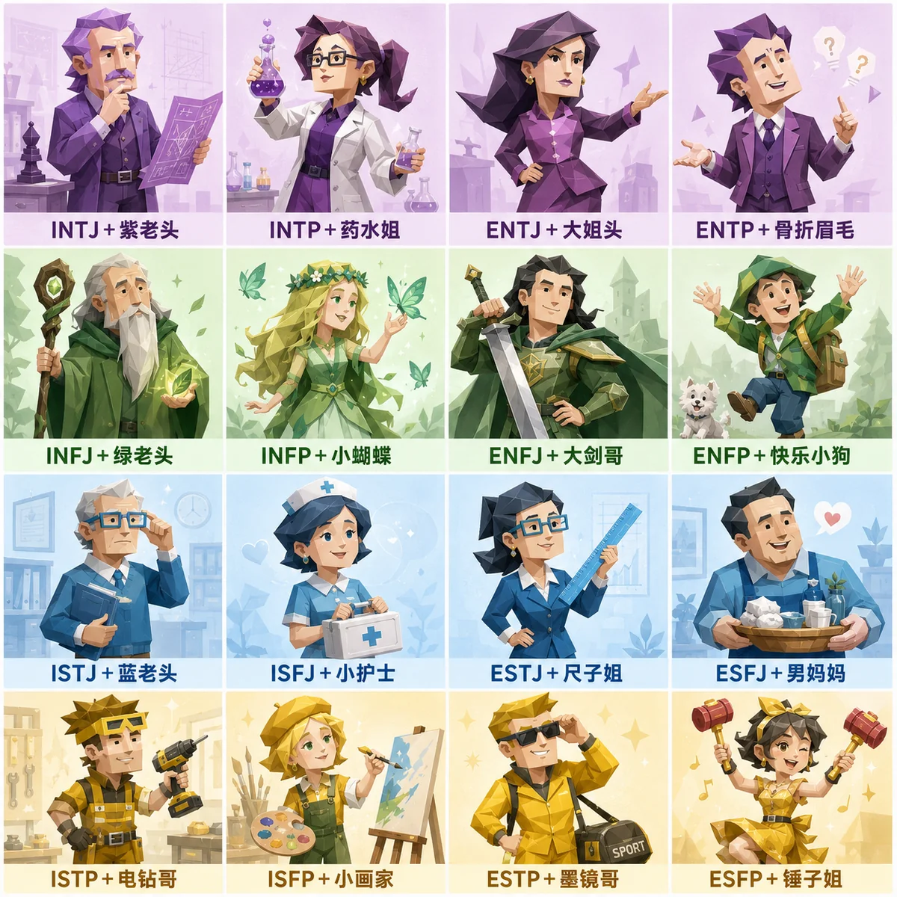

16 型人格趣味测试
基于 Open Jungian Type Scales 2.1 · 本地确定性计分 · 仅供娱乐

共 48 题，约 5–8 分钟。每题配场景插画，凭第一直觉选，越不琢磨越准。
所有计分都在你的浏览器里完成：答案只保存在本机浏览器中用于断点续答，不上传、不共享；点「重新测试」即清除。本测试不是官方 MBTI，仅供娱乐与自我探索，不能用于医疗、招聘等用途。
偏左居中偏右
八极分数
保存或分享
分享版发圈晒人设，分析长图留给自己看，存档提示词发给 AI 助理记住你。
本测试改编自 Eric Jorgenson 的 Open Jungian Type Scales 2.1（CC BY-NC-SA 4.0）， 中文翻译与页面由 sixteen-personality-fun-test 项目提供，与 16Personalities、The Myers-Briggs Company 均无关联。 结果仅供娱乐与自我观察，不构成医学、心理或招聘建议。计分全程在本地浏览器完成。